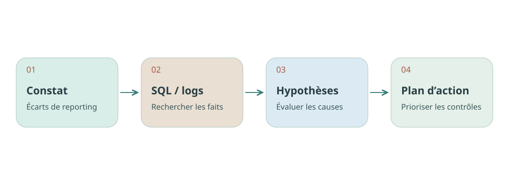

Schéma explicatif du périmètre décrit ; les environnements sont précisés dans l’étude.
Le besoin et ma contribution
Expliquer pourquoi un indicateur commercial varie et proposer une démarche de fiabilisation. J’ai exploré les données et journaux, construit des requêtes de contrôle et formalisé les recommandations.
Croiser données et traces
Les analyses relient ventes et dimensions produit, client, employé et calendrier. Les traces d’insertion et de mise à jour sont examinées pour distinguer évolution métier et effet des traitements.
Séparer constat et hypothèse
Une date métier ne prouve pas l’heure réelle d’exécution d’un batch. L’évolution du prix produit peut également modifier un calcul historique si le modèle ne conserve pas le prix pertinent à la vente. Les hypothèses sont donc accompagnées de leurs limites de preuve.
Un diagnostic exploitable
Les livrables comprennent les requêtes SQL et un rapport d’audit avec priorités de remédiation : traçabilité temporelle, stabilité du reporting historique et contrôles de fraîcheur. Il s’agit de recommandations, pas d’une correction de production déjà mesurée.
Compléter l’observabilité
Les journaux disponibles ne suffisent pas à prouver une cause de latence batch. Les prochaines vérifications demandent des horodatages d’exécution et une mesure avant/après des actions retenues.
Code et éléments de preuve
Les extraits et résultats ci-dessous proviennent des livrables du projet, consultés le 16 novembre 2026. Les traitements n’ont pas été réexécutés pour cette présentation.